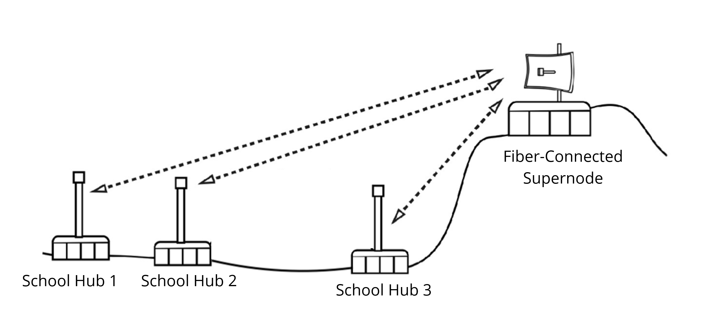

Solution: Build a Wireless Community Internet for Students
Why build one?
Affordable
Kid-Friendly, Distraction Free
Scalable
Supernode to School Hubs
Supernode
Fiber-connected backhaul for students to connect
to the global internet and providing fast speeds.
Sector antennas send signals to hubs and homes.
1-2 needed
$5,000-10,000
+ monthly fiber lease

Hub to Home
School Hubs
Wireless omni-directional antennas installed on the
city's nine PK-8 public schools. Serves as a central
access point for students.
~6 antennas per hub
$2,000 each
Last-Mile
Small antennas installed on residential rooftops and/or
telephone poles which give students connectivity to learn
at home. User can self-install.
1-2 per node
$100-200 each

Potential Supernode Locations